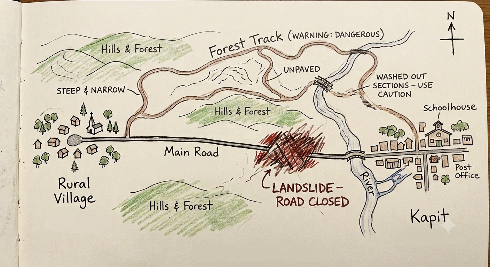
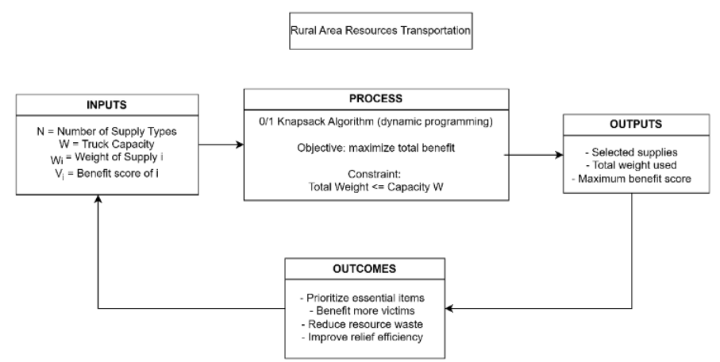
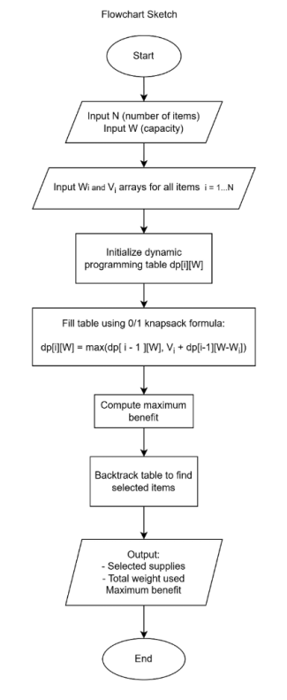
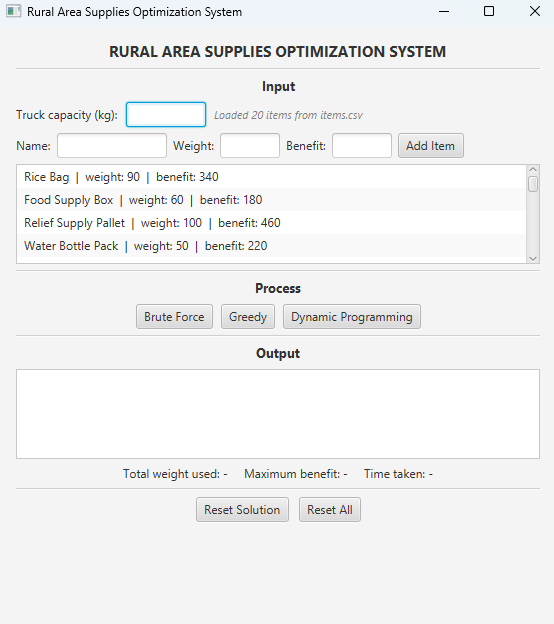
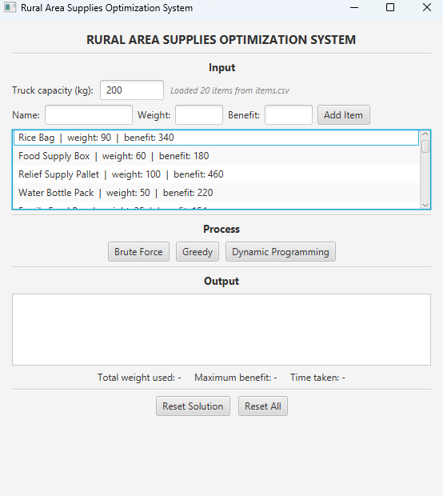
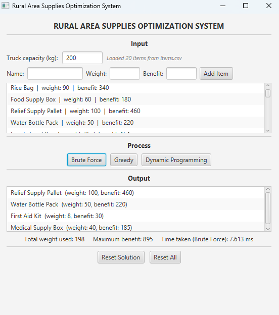
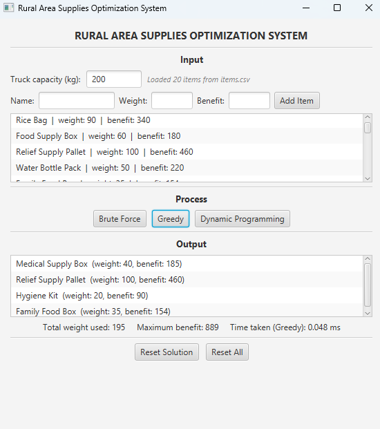
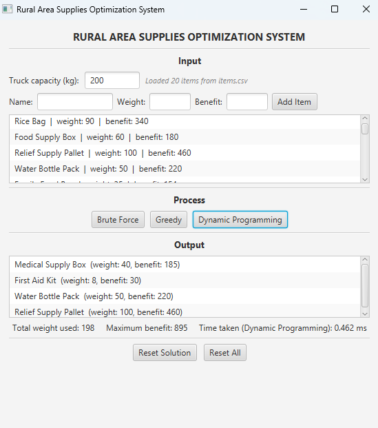

CCS4202 - DESIGN AND ANALYSIS OF ALGORITHMS
GROUP PROJECT
GROUP NAME: RURAL HEROES
LECTURER: ASSOC. PROF. DR. RAZALI BIN YAAKOB
Project Leader, Problem Analyst
Algorithm Designer & Developer
Algorithm Designer & Developer
Analysis & Portfolio Lead
The Malaysian Relief Agency (MRA) has identified a remote village in a rural area in Kapit, Sarawak that has been cut off from nearby towns due to the only road connecting the village being blocked by a recent landslide. The village is currently experiencing a shortage of crucial supplies such as food, water, baby products, and medicine, since they are unable to obtain these resources unless they go through a long and very unstable road.

Recognizing the struggle, the MRA is planning to send out a team of volunteers to the village to help the villagers. They will only send out a single supply truck alongside the volunteers since the road to the village is unstable and risky. Because of that, the capacity available to bring supplies on the truck is limited to 200 kg as a safety precaution and to make sure the truck will have enough fuel for the journey back home as well.
The relief team has gathered a list of candidate supply items (for example, rice, water purification tablets, baby formula, blankets, and first-aid kits), each with a known weight or volume, and a benefit score reflecting how critical that item is to the survival and wellbeing of the villagers. Because the truck cannot carry every available item, the relief team must decide which items to bring so that the greatest overall benefit is delivered to the village, a decision-making challenge widely studied in humanitarian logistics research.
This decision is modelled as a 0/1 Knapsack Problem [1], since each item is either loaded as a whole or left behind; items cannot be split into fractions, making simple ratio-based selection strategies potentially sub-optimal.
Obtaining the optimal selection of items in this scenario is crucial since each kilogram could make a big difference. By using Algorithm Design and Analysis, we hope to be able to select the items that will give the maximum benefit to bring to the village. The goal is to produce a definitive packing list, the total weight used, and the maximum benefit score achieved, helping with the relief team's decision-making under capacity and time constraints.

n = 20 (number of supply item categories)W = 200 kg (truck capacity)items[i] = { name, weight, benefit score } for i = 1 … ndp[i][c] = maximum priority score using the first i items with remaining capacity c, following the dynamic programming approach [2]selected[] = boolean array indicating which items are included in the solutionMaximise:
Σ score[i] × selected[i] for i = 1 to n
Subject to:
Σ weight[i] × selected[i] ≤ W
selected[i] ∈ {0, 1} for all i
This model applies a single space constraint, which is the truck's 200 kg weight capacity. Other possible constraint types such as a time constraint (e.g. a delivery deadline) or a value constraint (e.g. a minimum required benefit score), were considered but intentionally left out of scope, since the scenario's core limitation is the truck's carrying capacity rather than time pressure or a minimum benefit requirement.
The relief team's candidate supply items, with their weight (kg) and benefit score.
| # | Item | Weight (kg) | Benefit Score |
|---|---|---|---|
| 1 | Rice Bag | 90 | 340 |
| 2 | Food Supply Box | 60 | 180 |
| 3 | Relief Supply Pallet | 100 | 460 |
| 4 | Water Bottle Pack | 50 | 220 |
| 5 | Family Food Box | 35 | 154 |
| 6 | Hygiene Kit | 20 | 90 |
| 7 | Blanket Bundle | 12 | 50 |
| 8 | First Aid Kit | 8 | 30 |
| 9 | Gas Canister | 15 | 45 |
| 10 | Tent Package | 25 | 75 |
| 11 | Baby Formula Box | 18 | 70 |
| 12 | Mosquito Net | 10 | 28 |
| 13 | Solar Lamp | 9 | 26 |
| 14 | Generator | 45 | 140 |
| 15 | Fuel Container | 22 | 55 |
| 16 | Tarpaulin Pack | 14 | 40 |
| 17 | Medical Supply Box | 40 | 185 |
| 18 | Emergency Water Tank | 70 | 280 |
| 19 | Communication Equipment | 55 | 245 |
| 20 | Rescue Equipment Kit | 30 | 125 |
An algorithm that is simple, although sorting standalone is not a complete algorithm that is viable for solving the selection problem. It is however a prerequisite step for the Greedy Algorithm.
An algorithm that performs well for problems that can be divided into individual sub-problems. However, not suitable for the 0/1 Knapsack problem since the sub-problems of 0/1 Knapsack overlap, causing the same sub-problem to be solved repeatedly as it lacks memoisation. This will lead to an exponential time complexity (O(2n)).
Another simple algorithm which can solve the problem with sorting as a step, though might not produce the optimal solution for the problem. This is because the 0/1 Knapsack problem is indivisible, meaning it will always choose a path that is locally optimal, but does not guarantee a globally optimal result. This could leave out wasted capacity, preventing an optimal solution. However, it is still implemented in the demonstration to compare its performance.
An algorithm that always provides the optimal solution without blindly checking every combination, as it uses bottom-up tabulation, meaning it builds up from the smallest subproblems to the final answer. It is the optimal solution for the 0/1 Knapsack problem as it handles the 0/1 constraint perfectly without leaving wasteful gaps.
An algorithm that is effective for routing, flow, and shortest-path problems. However, not applicable for the optimal item-selection problem in this scenario.
Similar to Divide and Conquer, will check every possible combination, causing the time complexity to be exponential. However, it is still implemented as a correctness check.
The 0/1 Knapsack problem is classified as NP-hard, meaning there is no known polynomial-time algorithm that solves it in the general case [4]. However, Dynamic Programming remains practical for this scenario because its solution runs in pseudo-polynomial time, O(n × W), where n is the number of items and W is the truck's capacity. This is efficient for the given scale of the problem (n = 20, W = 200 kg), even though the underlying problem is theoretically hard for arbitrarily large inputs.
Compared to the other approaches reviewed above, Dynamic Programming is the only method that satisfies both requirements of this scenario:
For these reasons, Dynamic Programming was selected as the primary algorithm for this project, with Greedy and Brute Force also implemented alongside it in the Demonstration section for comparison and correctness verification respectively.
The chosen algorithm uses bottom-up dynamic programming [5], building a table dp[i][c]
that stores the best benefit score achievable using the first i items with remaining capacity c.
dp[i][c] = max(dp[i-1][c], dp[i-1][c-weight[i]] + score[i])
Each cell either skips item i (keeping the previous best) or includes it (adding its score to the best result for the remaining capacity), depending on which one is larger.
ALGORITHM DPKnapsack(items[1..n], capacity W)
// dp[i][w] = best score using first i items with capacity w
CREATE dp[0..n][0..W], initialized to 0
FOR i FROM 1 TO n
FOR w FROM 0 TO W
IF weight[i] > w THEN
dp[i][w] ← dp[i-1][w] // can't fit item i
ELSE
dp[i][w] ← max(dp[i-1][w], score[i] + dp[i-1][w - weight[i]])
END IF
END FOR
END FOR
RETURN dp[n][W]
END ALGORITHMThis builds the table from the smallest subproblems upward, so every cell only depends on values already computed, giving the algorithm its O(n × W) running time.
ALGORITHM TraceSelectedItems(dp, items, n, W)
selectedItems ← empty list
w ← W
FOR i FROM n DOWN TO 1
IF dp[i][w] ≠ dp[i-1][w] THEN // item i was included
selectedItems.add(i)
w ← w - weight[i]
END IF
END FOR
RETURN selectedItems
END ALGORITHMSince the table only stores the maximum score and not which items produced it, this second pass walks backward through the table to recover the actual list of items, a technique used in established algorithms for large-scale knapsack instances [3].

The greedy approach sorts items by their score-to-weight ratio and adds them in that order until the truck's capacity is reached.
ALGORITHM GreedyKnapsack(items[1..n], capacity W)
FOR each item i FROM 1 TO n
ratio[i] ← score[i] / weight[i]
END FOR
Sort items in DESCENDING order of ratio[i]
totalScore ← 0
remainingCapacity ← W
selectedItems ← empty list
FOR each item i IN sorted order
IF weight[i] ≤ remainingCapacity THEN
selectedItems.add(i)
totalScore ← totalScore + score[i]
remainingCapacity ← remainingCapacity - weight[i]
END IF
END FOR
RETURN totalScore, selectedItems
END ALGORITHMThe brute force approach checks every possible subset of items and keeps the best valid one.
ALGORITHM BruteForceKnapsack(items[1..n], capacity W)
bestScore ← 0
bestSubset ← empty set
FOR each subset S of {1, 2, ..., n} // 2^n subsets total
totalWeight ← sum of weight[i] for i in S
totalScore ← sum of score[i] for i in S
IF totalWeight ≤ W AND totalScore > bestScore THEN
bestScore ← totalScore
bestSubset ← S
END IF
END FOR
RETURN bestScore, bestSubset
END ALGORITHMThis section proves that the Dynamic Programming algorithm defined in Algorithm Design always returns the true optimal benefit score, using the recurrence:
dp[i][c] = max(dp[i-1][c], dp[i-1][c-weight[i]] + score[i])
Before proving the recurrence is correct in value, it must first be shown to always terminate. Each call
to dp[i][c] only ever depends on smaller subproblems, dp[i-1][c] and
dp[i-1][c - weight[i]], where i strictly decreases. Since i is bounded below by 0 and c is
bounded between 0 and W, the recurrence reaches the base case dp[0][c] = 0 after at most n
steps, for any input. This guarantees the algorithm always halts and reaches a defined value at
dp[n][W], rather than recursing indefinitely. This is a necessary condition before correctness of
the result itself can be proven below. (The resulting O(n × W) pseudo-polynomial time bound this
produces is discussed further in Algorithm Specification [4]
and examined empirically in Algorithm Analysis.)
To prove the recurrence never misses the optimal combination, assume we have the truly optimal subset of the first i items that fits within capacity c. There are only two possibilities for item i within that optimal subset:
If item i is not part of the optimal subset, then that subset is drawn entirely from the first i-1 items.
Its value must therefore equal the optimal solution for i-1 items at the same capacity c that is
dp[i-1][c].
If item i is part of the optimal subset, the remaining items must occupy at most c - weight[i]
capacity. Those remaining items must themselves be the optimal solution for i-1 items at capacity
c - weight[i], since if a better combination existed, adding item i to it would beat our assumed
optimal subset, which is a contradiction. So this case is correctly represented by
score[i] + dp[i-1][c - weight[i]].
Since the optimal subset must fall into exactly one of these two cases, taking the maximum of both guarantees the recurrence finds the true optimal value for every i and c.
Base case: dp[0][c] = 0 for all c, since with zero items the maximum
achievable benefit is trivially 0.
Inductive hypothesis: assume dp[i-1][c] is correct for every capacity c.
Inductive step: by the optimal substructure proof above, dp[i][c] is
computed by taking the maximum of two cases that both rely only on already-correct
dp[i-1][...] values. Therefore dp[i][c] must also be correct.
By induction, this holds for every row up to i = n, so dp[n][W] = dp[20][200] is
guaranteed to contain the true maximum benefit score for the full problem.
To confirm correctness in practice, the Dynamic Programming algorithm's output was compared against Brute Force's exhaustive search on the same 20-item dataset. Since Brute Force checks all 220 possible subsets, it serves as a correctness check, where matching results confirm the implementation is correct (see Demonstration for the comparison results).
The Rural Area Supplies Optimization System is a desktop application implementing all three algorithms from Algorithm Design; Brute Force, Greedy, and Dynamic Programming; so their outputs can be directly compared on the same dataset and truck capacity.
MainApp.javaMainView.fxmlitems.csvjavac --module-path <path-to-javafx-lib> --add-modules javafx.controls,javafx.fxml *.javajava --module-path <path-to-javafx-lib> --add-modules javafx.controls,javafx.fxml MainAppItem – data model: name, weight, benefit score.Solution – data model: chosen items, total weight, total benefit.Solver – shared interface implemented by all three algorithms.loadFromCsvIfPresent() – reads items.csv, skips the header, populates the items list.Greedy.solve(items, capacity) – sorts by benefit-to-weight ratio, greedily selects, returns a Solution.DynamicProgramming.solve(items, capacity) – builds the dp[][] table, backtracks to find chosen items, returns a Solution.BruteForce.solve(items, capacity) – recursively checks every include/exclude combination, returns a Solution.MainController.runSolver(solver, label) – runs the selected algorithm, times it, and displays the result.
Full source code is provided in the accompanying zip file as MainApp.java,
MainController.java, MainView.fxml, Item.java,
Solution.java, Solver.java, Greedy.java,
DynamicProgramming.java, and BruteForce.java. The code is also available in
the online portfolio repository.

items.csv are loaded automatically into the input list.



| Algorithm | Maximum Benefit | Weight Used (kg) | Time Taken |
|---|---|---|---|
| Brute Force | 895 | 198 | 7.613 ms |
| Greedy | 889 | 195 | 0.048 ms |
| Dynamic Programming | 895 | 198 | 0.462 ms |
Dynamic Programming matches Brute Force's maximum benefit score of 895 exactly, confirming the correctness argument from Algorithm Correctness in practice. Greedy, by contrast, settles for a lower benefit of 889, which is a concrete example of the sub-optimal result predicted in Algorithm Specification, where locally optimal choices fail to guarantee a globally optimal outcome. Dynamic Programming also runs much faster than Brute Force, demonstrating that it achieves the optimal result without the exponential cost of checking every possible subset.
For this problem: n = 20, W = 200. Table size = 20 × 201 = 4,020 cells. Greedy is the fastest in theory since it avoids building a table entirely, but Dynamic Programming remains extremely fast at this scale and is the only one of the three that guarantees the exact optimal solution, a pattern consistent with other empirical comparisons of Greedy and Dynamic Programming on the 0/1 Knapsack problem [6].
| Algorithm | Maximum Benefit | Weight Used (kg) | Time Taken |
|---|---|---|---|
| Brute Force | 895 | 198 | 7.613 ms |
| Greedy | 889 | 195 | 0.048 ms |
| Dynamic Programming | 895 | 198 | 0.462 ms |
The Greedy algorithm reached a benefit score of 889 using 195 kg of the available 200 kg capacity, leaving 5 kg unused. Dynamic Programming reached a higher benefit score of 895 using 198 kg, matching Brute Force's exhaustively-verified optimal result exactly. This demonstrates the classical failure mode of the Greedy approach on the 0/1 Knapsack problem: by committing early to whichever items have the best benefit-to-weight ratio, Greedy can leave a small amount of capacity unused that a different combination would have filled more effectively, resulting in a lower total benefit despite running far faster.
Comparing actual run times against the theoretical operation counts also shows an expected pattern rather than an exact match: Greedy runs fastest in practice (0.048 ms), consistent with its O(n log n) complexity doing the least work overall, while Brute Force is dramatically slower (7.613 ms), consistent with its O(2n) complexity exploring all 220 combinations. Dynamic Programming sits in between (0.462 ms), reflecting its O(n × W) table of 4,020 cells. The exact timings are also affected by factors outside Big-O notation, such as object allocation overhead in Brute Force's recursive calls, but the overall ordering of the three algorithms matches what their time complexities predict.
This project modelled the relief effort for a village in Kapit, Sarawak as a 0/1 Knapsack problem, where a single truck with a 200 kg capacity must be loaded with the combination of supplies that delivers the greatest possible benefit to the cut-off village.
Dynamic Programming was selected as the primary algorithm, and was shown to consistently produce the optimal benefit score through formal proof in Algorithm Correctness and empirical comparison in the demonstration. It matched Brute Force's exhaustive result of 895 while running in a fraction of the time, and outperformed Greedy's sub-optimal result of 889, confirming the theoretical guarantee that Greedy cannot offer for an indivisible, 0/1 selection problem.
Overall, the project demonstrates that for problems of this scale, Dynamic Programming offers the best available balance between guaranteed optimality and computational efficiency, making it a practical and justified choice for supporting real decision-making under the kind of capacity and time constraints faced by relief organisations such as the MRA.